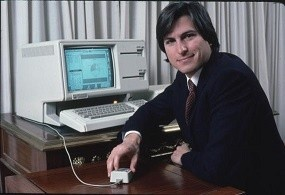
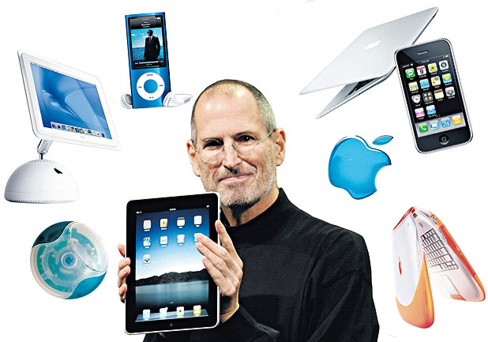

Steve Jobs was an iconic entrepreneur, visionary, and co-founder of
Apple Inc., one of the most
influential technology companies in the world. Born on February 24, 1955, in San Francisco,
California,
Steve Jobs would go on to become a symbol of innovation and creativity, leaving an indelible mark on
the
technology industry and transforming the way we interact with technology.
From an early age, Jobs displayed a keen interest in electronics and computers. He attended Reed
College
briefly before dropping out, but his passion for technology led him to co-found Apple Computer Inc.
in
1976 alongside his friend Steve Wozniak and Ronald Wayne. Together, they set out to revolutionize
the
personal computer industry.
The introduction of the Apple I and later the Apple II computers catapulted Apple to success, making
it
one of the pioneers in the computing world. However, Jobs' relationship with Apple was not always
smooth, and he faced conflicts with the board of directors, which ultimately led to his departure
from
the company in 1985.
Steve Jobs was an iconic entrepreneur, visionary, and co-founder of
Apple Inc., one of the most
influential technology companies in the world. Born on February 24, 1955, in San Francisco,
California,
Steve Jobs would go on to become a symbol of innovation and creativity, leaving an indelible mark on
the
technology industry and transforming the way we interact with technology.
From an early age, Jobs displayed a keen interest in electronics and computers. He attended Reed
College
briefly before dropping out, but his passion for technology led him to co-found Apple Computer Inc.
in
1976 alongside his friend Steve Wozniak and Ronald Wayne. Together, they set out to revolutionize
the
personal computer industry.
The introduction of the Apple I and later the Apple II computers catapulted Apple to success, making
it
one of the pioneers in the computing world. However, Jobs' relationship with Apple was not always
smooth, and he faced conflicts with the board of directors, which ultimately led to his departure
from
the company in 1985.
Undeterred by this setback, Steve Jobs founded NeXT Inc., a computer
company that focused on higher
education and business markets. NeXT's innovative technologies and design laid the foundation for
future
Apple products. In 1986, Jobs also purchased the computer graphics division of Lucasfilm Ltd, which
later became Pixar Animation Studios. Under his leadership, Pixar produced groundbreaking animated
films
such as "Toy Story," "Finding Nemo," and "The Incredibles."
In 1997, Apple Inc. acquired NeXT, and Steve Jobs returned to the company he co-founded. His
visionary
leadership and commitment to design excellence resulted in a series of groundbreaking products that
reshaped entire industries. The iPod, iPhone, iPad, and Macbook became iconic devices, transforming
Apple into one of the world's most valuable companies.
On October 5, 2011, Steve Jobs passed away after a long battle with
pancreatic neuroendocrine tumor,
leaving a profound legacy that continues to inspire and influence generations of entrepreneurs,
designers, and technologists worldwide. His relentless pursuit of excellence, passion for
innovation,
and commitment to pushing the boundaries of what's possible continue to shape the way we live, work,
and
communicate in the digital age. Steve Jobs' impact on the world of technology and his unparalleled
contributions to the creative industries have solidified his place as a true visionary and an
enduring
inspiration for generations to come.

Steve Jobs' early life played a crucial role in shaping the innovative
and entrepreneurial spirit that later defined his career. Born on February 24, 1955, in San
Francisco, California, Steve Jobs was adopted shortly after birth by Paul and Clara Jobs. His
adoptive parents provided a nurturing environment that encouraged curiosity and learning.
Growing up in Mountain View, California, a region later known as
Silicon Valley, Steve Jobs was exposed to electronics and technology from an early age. His father,
Paul Jobs, was a skilled mechanic and craftsman who taught Steve about the inner workings of
machines, instilling in him a passion for tinkering and problem-solving.
As a child, Jobs showed an interest in electronics and spent time in his family's garage, often
taking apart and reassembling gadgets. This hands-on experience sparked his fascination with the
potential of technology to transform lives.
While attending Homestead High School, Steve Jobs met Stephen Wozniak,
a fellow electronics enthusiast and engineering prodigy. Together, they became fast friends and
bonded over their shared passion for technology. Wozniak's technical expertise combined with Jobs'
visionary ideas laid the foundation for a future partnership that would change the world of
computing.
After graduating from high school, Steve Jobs enrolled at Reed College in Oregon. However, he soon
dropped out after just six months due to the financial burden it placed on his adoptive parents.
Jobs continued attending classes informally, auditing courses that interested him, and exploring his
passion for calligraphy, a subject that would later inspire Apple's attention to design and
aesthetics.
In 1974, Jobs returned to California and began attending meetings of
the Homebrew Computer Club, a group of computer hobbyists. It was at one of these meetings that he
reconnected with Wozniak. The duo started collaborating on various projects, including designing and
building their first computer, the Apple I, in 1976.
Steve Jobs' early life experiences, curiosity, and exposure to
cutting-edge technology formed the foundation for his future endeavors. His passion for simplicity
and elegant design, which he cultivated through his study of calligraphy, would eventually shape the
user-friendly and visually appealing products that Apple became renowned for.
The early life of Steve Jobs was marked by a relentless pursuit of knowledge, a deep appreciation
for aesthetics, and a profound curiosity about the possibilities of technology. These qualities,
combined with the fateful meeting with Stephen Wozniak, set him on a path that would forever change
the landscape of computing and make him one of the most influential figures in the history of modern
technology.
1. Co-Founding Apple Inc. (1976): Steve Jobs, along with his friend Steve Wozniak and Ronald Wayne,
co-founded Apple Computer Inc. (later renamed Apple Inc.) in Jobs' family garage. This pivotal
moment
marked the beginning of a company that would change the course of computing and technology.
2. Launching the Apple II (1977): The Apple II, introduced in 1977, was one of the earliest
successful
personal computers with a color display and a user-friendly interface. It played a critical role in
popularizing personal computing and laid the foundation for Apple's future success.
3. Introduction of the Macintosh (1984): The Macintosh, launched with the iconic "1984" Super Bowl
commercial, was the first commercially successful personal computer to feature a graphical user
interface and a mouse. Its revolutionary design and user-friendly experience set new standards for
personal computing.
4. Departure from Apple (1985): A power struggle within Apple's leadership led to Steve Jobs'
departure
from the company in 1985. Jobs went on to found NeXT Inc. and purchase the computer graphics
division of
Lucasfilm Ltd., which later became Pixar Animation Studios.
5. Founding NeXT Inc. (1985): Jobs founded NeXT Inc., a company focused on creating high-performance
computers for the higher education and business markets. Although NeXT's hardware didn't achieve
widespread success, its operating system and technologies laid the groundwork for future Apple
products.
6. Acquiring Pixar (1986): In 1986, Steve Jobs purchased the computer graphics division of Lucasfilm
Ltd. for $10 million, which later became Pixar Animation Studios. Pixar went on to produce
groundbreaking animated films, including "Toy Story," "Finding Nemo," and "The Incredibles."
7. Return to Apple (1997): In one of the most significant turnarounds in corporate history, Steve
Jobs
returned to Apple in 1997 after the company acquired NeXT Inc. Apple was struggling at the time, but
Jobs' return brought a renewed focus on innovation and design.
8. Introduction of the iMac (1998): Jobs led the development of the iMac, an all-in-one computer
with a
colorful and sleek design that captured the public's imagination. The iMac's success marked a
turning
point for Apple's resurgence.
9. Launch of iPod (2001): The iPod, introduced in 2001, revolutionized the way people listened to
music.
Its simple and elegant design, combined with the iTunes software, created a seamless digital music
ecosystem and laid the foundation for the modern era of portable media players.
10. Introduction of iPhone (2007): The iPhone, launched in 2007, redefined the smartphone industry.
Its
innovative touchscreen interface, robust app ecosystem, and sleek design set a new standard for
mobile
devices and made Apple a dominant player in the mobile market.
1. Revolutionary Products: Jobs' legacy is defined by the revolutionary products he brought to the
world through Apple Inc. His vision led to the creation of iconic devices like the iPhone, iPad,
iPod, and Macintosh, which have redefined the way we communicate, consume media, and interact with
technology.
2. Design Aesthetics and User Experience: Jobs emphasized the importance of design aesthetics and
user experience, elevating product design to an art form. His obsession with simplicity and elegance
resulted in products that were not only functional but also visually appealing and user-friendly.
This focus on user-centric design has set the standard for the entire tech industry.
3. Integration of Hardware and Software: Jobs believed in tightly integrating hardware and software
to provide a seamless and intuitive user experience. This approach ensured that Apple's products
worked cohesively, offering a level of integration that was unparalleled in the industry.
4. Closed Ecosystem and App Store: Jobs' vision of a closed ecosystem, where Apple controlled both
the hardware and software, enabled a consistent user experience across its devices. The introduction
of the App Store further enriched this ecosystem, empowering developers and providing users with a
vast array of applications for their devices.
5. Impact on Multiple Industries: Jobs' influence extended beyond technology, as he played a
significant role in transforming industries such as music, animation, publishing, and mobile
communications. His contributions to Pixar Animation Studios revolutionized the animation industry,
while the iTunes Store reshaped the music industry, making digital music mainstream.
6. Inspiring Entrepreneurship: Jobs' journey from a college dropout to a co-founder of Apple and
later the CEO inspired countless entrepreneurs to follow their passions and pursue their dreams. His
tenacity, resilience, and ability to turn failure into success serve as an enduring inspiration for
aspiring innovators and business leaders.
7. Cultural Icon: Steve Jobs became a cultural icon known for his captivating keynote presentations
and his unique personal style, which included his iconic black turtleneck, jeans, and sneakers. His
charismatic stage presence and "one more thing" surprises at product launches made him a beloved
figure in pop culture.
8. Legacy of Philanthropy: Despite his intense focus on innovation and business, Jobs also left a
legacy of philanthropy. He and his wife, Laurene Powell Jobs, have been actively involved in
charitable endeavors, including educational initiatives, environmental causes, and support for
social justice.
